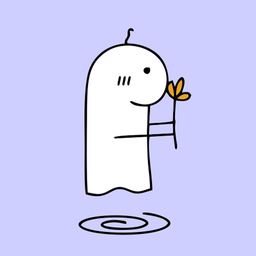

Privacy policy
Summary
Zee stores everything on your own tablet. The developer does not collect, receive, sell or share any of your data. There are no ads, analytics or tracking.
Data stored on your tablet
Your modules, imported PDFs, handwritten notes and drawings, cue cards, to-dos, budget entries, focus sessions, audio recordings and transcripts are stored only in the app's private storage on your device. Deleting the app deletes them.
Microphone
The microphone is used only when you press record. Recordings stay on your tablet. Transcription runs on the tablet itself; audio is not sent anywhere.
Google account (optional)
If you choose to connect a Google account, Zee asks for these permissions and uses them only for the features listed:
- Your email address: to show which account is connected.
- Google Calendar events (
calendar.events): to show your upcoming events in the Planner, and to add, update or remove events for to-dos you choose to put on your calendar. - Files created by Zee in Google Drive (
drive.file): to convert PowerPoint files you import into PDFs. The temporary copy is deleted straight afterwards. Zee cannot see your other Drive files. - Zee's private app folder in Google Drive (
drive.appdata): to store backups you make, and to restore them.
Data from Google is used only to provide these features on your tablet. It is not sent to the developer or any third party, not used for advertising, and not used to train AI models. Zee's use of information received from Google APIs follows the Google API Services User Data Policy, including the Limited Use requirements.
You can disconnect Google at any time in Zee's Settings, or remove Zee's access at myaccount.google.com/permissions.
Downloads
The first time you use transcription or handwriting recognition, Zee downloads a speech model (from Hugging Face) or a handwriting model (from Google). Only the model files are downloaded; none of your data is uploaded.
Contact
Questions: mwagodavid8@gmail.com